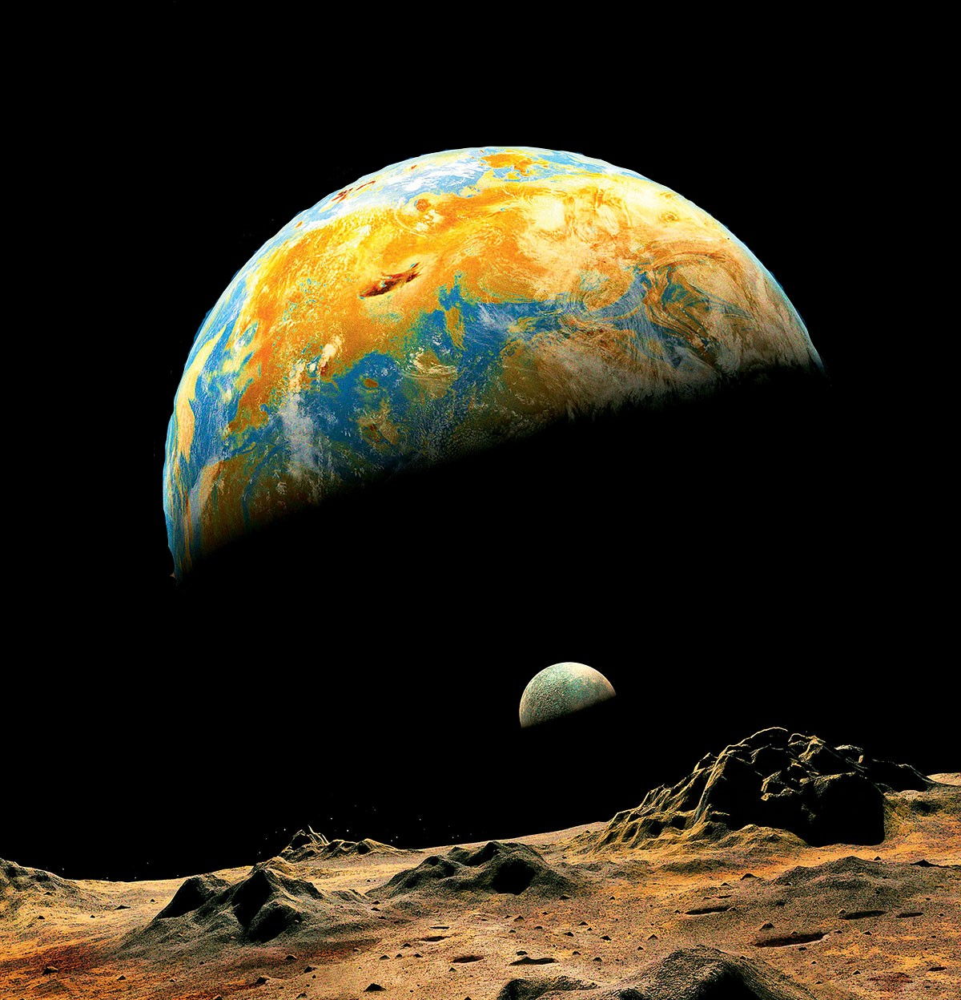

Вы наверняка не задумываетесь над тем, насколько нам повезло иметь смену дня и ночи. Наши сутки делятся на две равные части (во всяком случае, какую-то часть года они равны друг другу).
Для таких планет, как Gliese 581, такое невозможно, потому что они стоят на месте и не могут вращаться, поэтому одна сторона планеты всегда обращена к Солнцу, а другая — к тёмному космосу.
Однако в вечной неизведанности этих двух сторон может быть обитаемая земля, в которой есть жизнь. Земля пошла на риск и отправила радиосообщение планете Gliese 58, которое должно дойти до неё в 2029 году.
